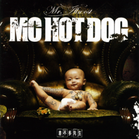
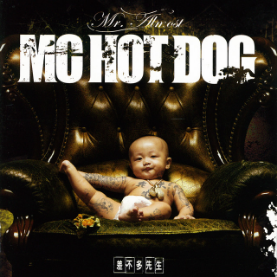
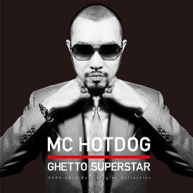
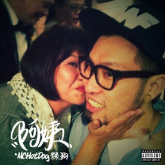

熱狗是在2000年左右出道的饒舌歌手，算是帶起華語Hip Hop風潮的始祖之一。他的首張創作專輯《Wake up》在2007年獲得第18屆金曲獎最佳國語專輯獎，並且在後續的音樂生涯中創作出《我愛台妹》、《差不多先生》和《貧民百萬歌星》等代表歌曲。
熱狗的作品多以赤裸的歌詞來抒發自己對社會現象的看法，風格強烈的音樂創作也是許多人喜歡熱狗的原因!
MC HotDog
 

MC HotDog
差不多先生
《差不多先生》收錄在同名專輯裡面，歌曲使用了壯麗的配樂，搭配歌詞闡述每個人或多或少會遇到面對人生總是得過且過的態度，以及一些對社會現象的抗議。這首歌是2008年的作品，而在2019年的中國新說唱節目上面被鄧紫棋翻唱後又爆紅了一波!

MC HotDog
貧民百萬歌星
《貧民百萬歌星》是一首具有勉勵和炫耀含意的歌，也有一點嘴別人的內容。歌詞中強調自己的出身平平、生活一般，但是他的歌一出來還是可以引起關注，呈現一種自立自強的對比感。歌曲我最喜歡的flow是「Dirty Dirty Job 到底可不可以呀，金錢的流向全部到我這裡這裡吧」，不知不覺會想多聽幾次。

MC HotDog
阿姨
《阿姨》是熱狗2022年初的最新單曲，歌詞就是引用了「阿姨我不想努力了」這個梗來發揮，雖然這首歌現在才正式發行，但是有去去年成大草地音樂會的大家早在一年前就聽過現場版了!!我覺得MV也拍得很好笑，可以去看看!
差不多的掛 我說著差不多抱怨的話 \ 時間也差不多了 該回我那差不多的家
差不多的瞎 指鹿為馬 都差不多嘛 \ 繼續吧 繼續瞎子摸象吧 有差嗎
差不多的瞎 指鹿為馬 都差不多嘛 \ 繼續吧 繼續瞎子摸象吧 有差嗎
--差不多先生 熱狗
怎樣才算富有 怎樣是窮 \ 上流還是下流 我活在矛盾中
不論我走到哪 都有人對我點頭 \ 貧民百萬歌星 他代表你也代表我
不論我走到哪 都有人對我點頭 \ 貧民百萬歌星 他代表你也代表我